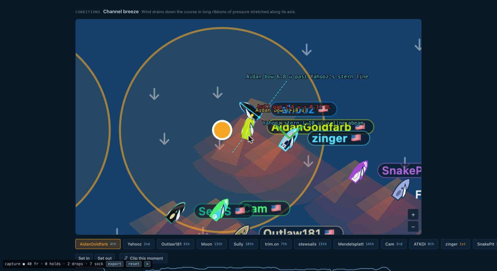
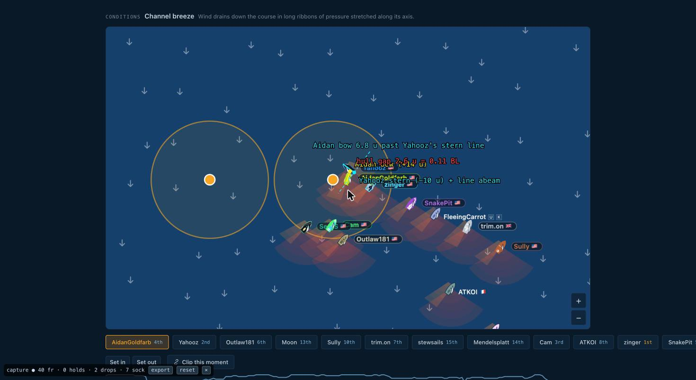

Protest Committee ruling — windward mark, AidanGoldfarb v Yahooz
Regattatron race d6509c47-8969-4fce-8ae6-83a2eb2aa5ec (16 boats, windward mark WW at (0, 960) u, to be left to port, zone 100.8 u = 4.2 BL).
Replay sampled at 1 Hz; sim clock in seconds. Racing Rules of Sailing 2025–2028. Reviewed 2026-10-27 by the ProtestCommittee toolkit (methodology v. repo HEAD).
Boats: A = AidanGoldfarb (slot 0, yellow hull), Y = Yahooz (slot 1, dark hull). Distances in game units (u) and hull lengths (BL = 24 u); hull modelled as measured from the renderer: bow +14 u, stern −10 u, beam 10 u.
Decision.Yahooz broke rule 13 and rule 15. She tacked from port to starboard inside the zone directly ahead of AidanGoldfarb, who was clear astern and closing at twice her speed, and while still tacking left AidanGoldfarb no room to keep clear: AidanGoldfarb had to luff from 37° to head to wind and tack, with the hulls 2.6 u (0.11 BL) apart. AidanGoldfarb broke no rule in the incident: she kept clear under rule 10 and then rule 13 by the only means available, and when she became the leeward right-of-way boat at t = 1298 she gave Yahooz room (rule 15), Yahooz never having to alter course. Rule 18 gives neither boat mark-room at the decisive moment (rules 18.1(a)(1) and 18.3). Yahooz did not take a penalty.
Audit of the engine. The engine's first call (t = 1294.5, Yahooz, rule 15, "Not enough time and space") is correct in substance. Its reversal 28.5 s later (t = 1323: Yahooz exonerated, AidanGoldfarb charged under rule 15 with no counterparty) is not supported by any fact in the replay: at t = 1323 no boat was within 32 u of AidanGoldfarb, nobody changed course, and AidanGoldfarb had held right of way since t = 1298. The One-Turn penalty AidanGoldfarb took at t = 1327–1341 was for a breach that did not occur.
1. Facts found
Wind from 352–358° throughout (close-hauled ≈ 307° on starboard, ≈ 37° on port). Positions are the boat's position point; "bow" = position + 14 u along heading, "stern" = position − 10 u. "Margin" is the distance of one boat's bow past the line abeam the other boat's stern (positive = overlapped, negative = clear astern). "Gap" is the shortest distance between the two hull centrelines (a 24 u segment each).
t (s)
Event
A tack / hdg
Y tack / hdg
A bow – mark
Y bow – mark
A bow vs Y stern line
gap
1236.4 / 1237.0
Y's bow, then A's bow, reach the zone (100.8 u). Overlapped both ways; Y 16 u to windward (inside), 11 u astern along A's axis.
S 320°
S 320°
100.7
99.2
+35.0
16.4
1261.5
Y passes head to wind onto port, 60 u from the mark (in the zone).
S 313°
P (348→8°)
79.7
55.1
+31.0
18.4
1264.7
A passes head to wind onto port, 74 u from the mark. No interaction (gap ≥ 18 u).
P (342→2°)
P 47°
74.4
46.9
−4.1
23.2
1271–1291
Both on port. Y clear ahead; A sails lower and faster (62–77°, 7.3–8.5 kt vs Y 50–55° then 38°, 6.9–7.8 kt) and converges on Y's leeward quarter. Y never alters course to avoid A.
P 62–77°
P 55→38°
49→29
28→42
−0.9 … −6.5
23 → 3.9
1291.3
Y passes head to wind onto starboard at (31.7, 974), 36 u from the mark, A 25 u astern of her on port closing at 7.4 kt. Y slows 6.9 → 3.3 kt.
P 42°
P→S (358°)
28.9
42.1
−1.9
3.9
1293
A's bow crosses Y's stern line while Y is still tacking (hdg 318°).
P 37°
tacking 318°
33.6
34.8
+1.5
4.1
1294.0
Y reaches a close-hauled starboard course (307°). A has luffed 37° → 17° (avoiding action); A's bow is at Y's stern quarter. Figure 1.
P 17°
S 307°
32.7
32.2
+6.8
2.6
1295.3
A passes head to wind onto starboard, 30 u from the mark, 3.8 kt.
P→S (357°)
S 307°
29.5
33.8
+7.8
5.3
1298.0
A on a close-hauled starboard course (307°), leeward of Y and overlapped. Y's course unchanged (307°). Gap opening.
S 307°
S 307°
18.5
36.5
+8.7
14.4
1299–1309
A passes 17 u north of the mark at 1299–1300 sailing 302°; Y passes 32 u north sailing 307–308°. Both leave the mark to port. Gap 15 → 18 u.
S 302°
S 307°
17.2 → 36.5
37.9 → 62.8
+7.7 → +3.5
15 → 18
1323
Engine reverses its call (see §4). A at (−55, 1001) sailing 288→298°, Y 39 u to windward sailing 311°, zinger 64 u away. No boat changes course.
S 298°
S 311°
—
—
+2.3
32
1327–1341
A takes a One-Turn penalty (engine EXONERATION at 1337).

Figure 1. The game's replay viewer (/race/d6509c47…/replay, camera following AidanGoldfarb, seek wall-time 258 830 ms ≙ sim t = 1294.0 s, zoom ×3). Overlaid in the viewer's own coordinates: AidanGoldfarb's hull centreline (yellow) and bow point; Yahooz's hull centreline (cyan), stern point and the dashed line abeam her stern; the red tick is the shortest hull-to-hull distance, 2.6 u = 0.11 BL. AidanGoldfarb's bow is 6.8 u past Yahooz's stern line: she is overlapped to leeward-astern, on port, head 17°, while Yahooz has just reached a close-hauled starboard course. Nothing in the picture is generated; only the lines and labels are added.

Figure 2. Same instant, zoomed out: the windward mark (right circle) and the offset mark (left circle) with their zones as drawn by the game. Both boats are inside the windward zone, about 32 u from the mark, with zinger on starboard to the east.
2. Rules applied
Rule 18 (mark-room). At zone entry (t ≈ 1237) the boats were overlapped with Yahooz inside, so rule 18.2(a)(1) obliged AidanGoldfarb to give Yahooz mark-room. That obligation ended under rule 18.2(b) when Yahooz passed head to wind at t = 1261.5, and from then until t = 1295.3 the boats were either on opposite tacks on a beat (rule 18.1(a)(1): rule 18 does not apply) or on the same tack but not overlapped (rule 18.2(c) needs an overlap). From t = 1295.3, when AidanGoldfarb also passed head to wind from port to starboard in the zone of a mark to be left to port, rule 18.3 applies: "rule 18.2 does not apply between her and another boat on starboard tack that is fetching the mark", and because Yahooz had not been on starboard tack since entering the zone (she tacked twice inside it), rule 18.3(a) and (b) impose nothing on AidanGoldfarb either. Neither boat held mark-room at any point in the incident; it is decided by Section A and B alone. (This is the 2025 change to rule 18.3: two boats that both tack in the zone get no mark-room between them.)
Rule 13 (while tacking). From t = 1291.3 (head to wind) to t = 1294.0 (close-hauled course, Case 17) Yahooz had to keep clear of AidanGoldfarb, and rules 10, 11 and 12 did not apply. A boat clear astern is entitled to hold her course and thereby prevent the boat ahead from tacking (Case 15). AidanGoldfarb held her course until t = 1293 and then had to luff 20° in one second and tack: Yahooz did not keep clear. Yahooz broke rule 13.
Rule 15 (acquiring right of way). At t = 1294.0 Yahooz became the starboard-tack right-of-way boat under rule 10 by her own action and had to "initially give the other boat room to keep clear". With AidanGoldfarb's bow 2.6 u from her stern quarter and already luffing, there was no room; AidanGoldfarb's only escape was to pass head to wind, which is not "room to keep clear" in a seamanlike way (Case 24, Case 27). Yahooz broke rule 15.Case 27 is directly on point: a boat that tacks on the layline a hull length ahead of a boat travelling fast breaks rule 13 (the avoiding action was needed before she reached close-hauled) and rule 15, and the other boat, which need not anticipate an illegal tack, is exonerated for her own rule 10 breach.
Rules 10 and 43.1 for AidanGoldfarb. While on port under a starboard boat (t = 1294.0–1295.3) AidanGoldfarb was bound by rule 10. If her luff-and-tack amounted to not keeping clear, she is exonerated under rule 43.1(a) (compelled by Yahooz's breach), exactly as BP was in Case 27. In any event she took the avoiding action that was available.
Rule 13 for AidanGoldfarb (t = 1295.3–1298.0). After passing head to wind she had to keep clear of Yahooz until close-hauled. Yahooz held 307° throughout and the gap grew from 2.9 u to 14.4 u. She kept clear.
Rule 15 for AidanGoldfarb (t = 1298.0). On reaching a close-hauled starboard course she became the leeward right-of-way boat under rule 11 by her own action and had to initially give Yahooz room to keep clear. Yahooz was 14 u (0.6 BL) to windward, needed no change of course and made none (Case 53: the newly obligated boat must be allowed time to respond; here no response was required). She gave room. Rule 17 (she became overlapped to leeward from clear astern within two hull lengths) was also observed: she sailed 302°, below Yahooz's 307°.
Rule 14. No contact event is recorded and the game's contact model is unknown. At t = 1294.0 the hull centrelines were 2.6 u apart at Yahooz's stern quarter, where the hull is narrower than its 10 u midships beam, so contact is possible but not established. AidanGoldfarb acted to avoid it; Yahooz, who could have delayed her tack by two seconds, did not.
3. Conclusion
Yahooz was at fault. She broke rules 13 and 15 by tacking inside the zone immediately ahead of a faster boat clear astern without leaving her room to keep clear. She took no penalty, so under rule 44.1 and rule 64.2 she would be penalised. AidanGoldfarb broke no rule in the incident; any technical rule 10 breach in the second before she passed head to wind is exonerated under rule 43.1(a). The One-Turn penalty AidanGoldfarb took at t = 1327–1341 was not required.
4. Audit of the engine's calls
t
Engine event
Committee
Basis
1294.5
INFRACTION Yahooz, rule 15, counterparty AidanGoldfarb, "Not enough time and space"
AGREE (substance)
Rule 15 at 1294.0; rule 13 for 1291.3–1294.0 is the sharper label (Case 27 charges both).
1323.0
EXONERATION Yahooz (no penalty turn in her track)
DISAGREE
Yahooz took no penalty; nothing happened between 1294.5 and 1323 that removes her breach.
1323.0
INFRACTION AidanGoldfarb, rule 15, no counterparty
DISAGREE
No boat within 32 u; no boat altered course; AidanGoldfarb had held right of way since 1298 and had given room then (Yahooz 14 u off, course unchanged). No fact supports a rule 15 breach.
Occurred during the unnecessary penalty turn (rule 21.2 would apply to a boat taking a penalty); consequential on the 1323 call. Not reviewed here.
The same pattern — a rule 15 call with a reason string, then 18–28 s later an EXONERATION of that boat and a rule 15 INFRACTION against the original counterparty with no counterparty field — occurs twice in this race (also Outlaw181 / SethS at t = 1334.5 → 1352.5). It looks like a systematic "reversal" behaviour of the engine rather than two independent judgements, and it should be checked against the facts in the second instance as well. The toolkit's automatic assessors cover rules 10, 11, 12 and 22 only; the rule 13/15/18 analysis above was done by hand from the sample table in cases/2026-10-27_race-d6509c47/window_slots0_1.csv.
5. Sensitivity and limits
Finding
Measured hull (bow +14, stern −10)
Symmetric hull (±12)
Stale 33.6 u hull (±16.8)
Effect on verdict
Yahooz clear ahead of AidanGoldfarb before her tack (t = 1286–1291)
−6.5 … −1.9 u (clear ahead)
−5.4 … −1.3 u (clear ahead)
+3.1 … +6.9 u (overlapped)
None. If overlapped, AidanGoldfarb was the leeward boat on port and Yahooz would have had to keep clear under rule 11 as well; the decisive rules (13, 15) are unchanged.
Hull gap at t = 1294.0
2.6 u = 0.11 BL (2.9 u at the 1294 sample)
4.8 u
0.2 u
None; "no room to keep clear" holds for any model.
Yahooz close-hauled at 1294.0 vs AidanGoldfarb's luff onset (between 1293 and 1294)
Indeterminate at 1 Hz (±0.5 s)
Decides whether the moment of crowding falls under rule 13 or rule 15; Yahooz is the keep-clear / room-giving boat under either.
Zone-entry order (Y 1236.4, A 1237.0, interpolated)
0.6 s apart; the boats were overlapped at both instants
None after t = 1261.5 (rule 18.2(b)).
Assumptions: wind direction from the sample's w field; close-hauled taken as 45° off the wind, which matches the fleet's headings (307°/37°); positions linearly interpolated between 1 Hz samples for the head-to-wind and zone-entry instants; the engine's collision model is unknown, so contact is labelled "modelled". Whether the engine's rule assignment uses the same hull offsets as the renderer is unconfirmed (methodology §8).
6. References
RRS 2025–2028 rules 10, 11, 12, 13, 14, 15, 17, 18.1, 18.2, 18.3, 43.1, 44.1 (text as published at racingrulesofsailing.org, Part 2 Sections A–C, checked 2026-10-27).
World Sailing Case Book 2025–2028: Case 15 (boat clear astern may hold her course and prevent the boat ahead from tacking; rule 18 ceases on opposite tacks on a beat), Case 17 (rule 13 ends when on a close-hauled course), Case 24 (room to keep clear means room to do so in a seamanlike way), Case 27 (tacking on the layline ahead of a fast boat: rules 13 and 15 broken; the other boat need not anticipate the breach and is exonerated), Case 53 (rule 15 implies time to respond).
Appendix M principles: facts stated definitely; diagrams from the game's own viewer; limits of 1 Hz evidence declared.